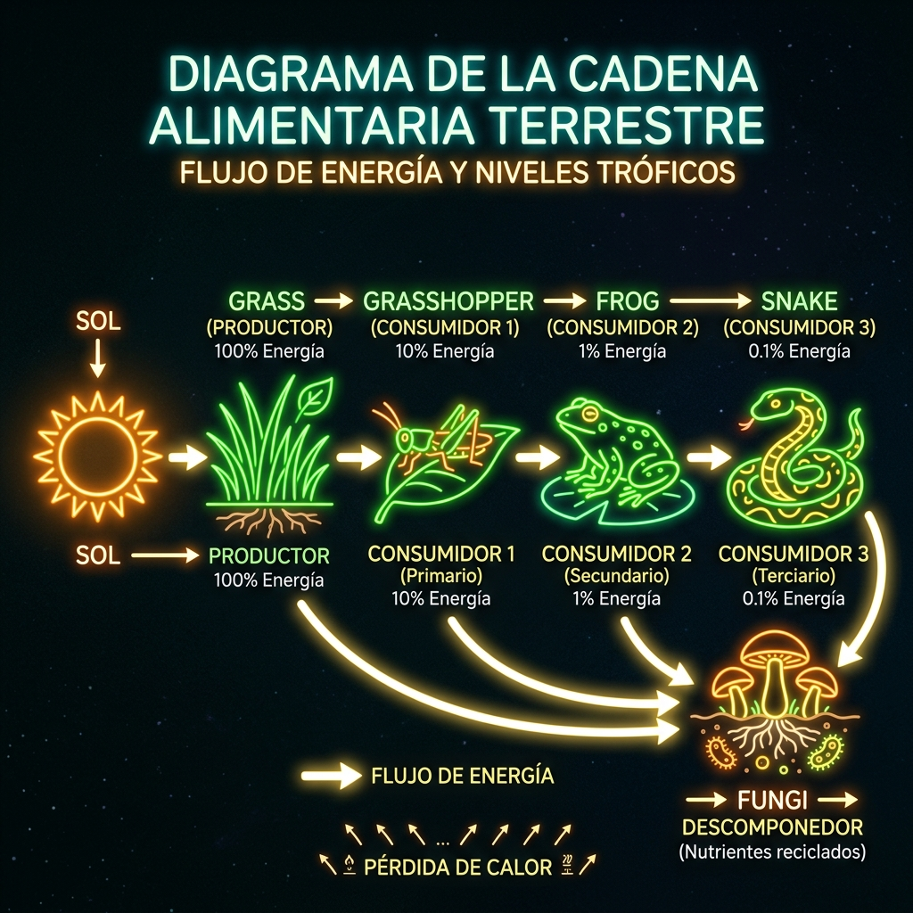

¿Qué es un ecosistema?
Un ecosistema es el conjunto formado por los seres vivos (componentes bióticos) que habitan un lugar, el ambiente físico (componentes abióticos) donde viven y las relaciones que se establecen entre ellos y con el medio. Es la unidad funcional básica de la Ecología.
Los componentes bióticos son todos los organismos: plantas, animales, hongos, bacterias, protistas. Los componentes abióticos son los factores no vivos del ambiente: la luz solar, la temperatura, el agua, el suelo, los minerales, el viento, el pH.
Un ecosistema puede ser enorme como el Amazonas o diminuto como un charco de agua en la vereda. Lo importante no es el tamaño, sino las interacciones que ocurren en su interior. La energía fluye y la materia se recicla constantemente.
Cadenas y redes tróficas
La energía entra al ecosistema a través de los productores (plantas, algas, cianobacterias), que capturan la luz solar y la transforman en energía química mediante la fotosíntesis. A partir de ellos, la energía fluye a través de las cadenas tróficas.

Esquema: Cadena Trófica Terrestre (Flujo de Energía)
Los niveles tróficos se organizan así: Productores (autótrofos) → Consumidores primarios (herbívoros) → Consumidores secundarios (carnívoros que comen herbívoros) → Consumidores terciarios (superdepredadores). Y cerrando el ciclo, los descomponedores (hongos y bacterias), que degradan la materia orgánica muerta y devuelven los nutrientes al suelo.
En la naturaleza, las cadenas no son lineales sino que se entrelazan formando redes tróficas. Un mismo organismo puede ser consumidor de distintas especies y a la vez ser presa de varios depredadores. Estas redes le dan estabilidad al ecosistema: si una especie desaparece, otras pueden ocupar su rol.
Ecosistemas del conurbano
Cuando pensamos en biodiversidad, muchas veces imaginamos selvas tropicales o arrecifes de coral. Pero no hace falta ir tan lejos: el conurbano bonaerense alberga ecosistemas muy valiosos con cientos de especies. La biodiversidad también es local.
Pastizal pampeano
El ecosistema original de la región pampeana. Dominado por gramíneas (pastos), con pocos árboles naturales. Hogar de vizcachas, zorrinos, liebres, perdices, chimangos, lechuzas y una gran variedad de insectos. Hoy quedan pocos relictos; la mayor parte fue reemplazada por agricultura y urbanización.
Humedales (Cuenca del Reconquista)
Zonas donde el agua cubre el suelo de forma permanente o temporaria. La cuenca del río Reconquista atraviesa varios partidos y alberga una rica biodiversidad: juncos, totoras, patos, garzas, coipos, ranas, tortugas acuáticas y peces como el bagre y la tararira. Los humedales funcionan como "esponjas naturales": absorben el agua de lluvia, mitigan inundaciones y filtran contaminantes.
Bosques urbanos y arbolado
Plazas, parques y calles arboladas forman corredores verdes para la fauna urbana. En estos espacios conviven horneros, benteveos, calandrias, mariposas, abejas, lagartijas y murciélagos insectívoros. Árboles como el jacarandá, el ceibo, el tala y el ombú proveen alimento, refugio y sitios de nidificación para muchas especies.
Preguntas para pensar
1. ¿Qué pasaría en un pastizal si desaparecieran todos los descomponedores? ¿Cómo afectaría al resto de la cadena trófica?
2. Observá un espacio verde cerca de tu casa (plaza, jardín, terreno baldío) y armá una lista de los componentes bióticos y abióticos que encontrás. ¿Qué relaciones podés identificar?
3. Los humedales del Reconquista están amenazados por la contaminación y el avance urbano. ¿Por qué es importante conservarlos? ¿Qué servicios nos brindan estos ecosistemas?